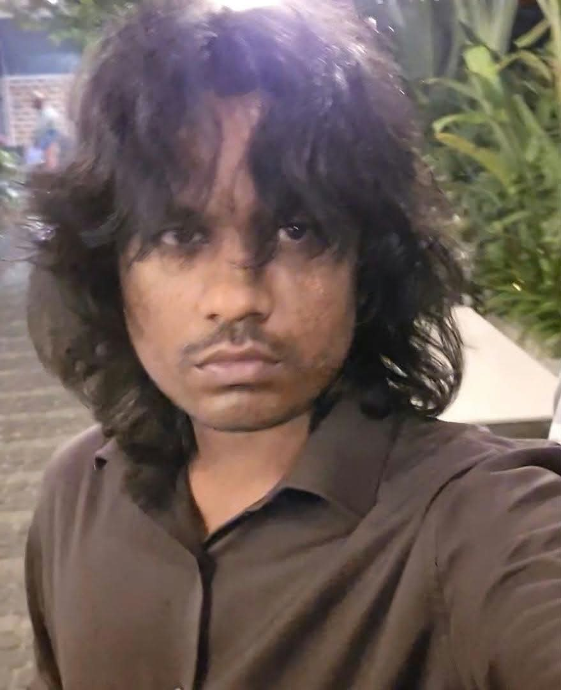

about · in my own words
More about me

Hey, I'm Varshith. I'm in the MSCS program at Northeastern, and when I'm not working on schemas or side projects I'm usually deep in a game or a manga chapter.
I used to watch a lot of anime, though it's been a while since I kept up with anything new these days I read a lot more manga than I watch anime. I mostly go for slice of life and isekai, but honestly I'll read almost anything if it's interesting. If you've got recommendations, send them my way.
I also play a ton of games. Some of my all-time favorites are Elden Ring, Undertale, Monster Hunter, Hollow Knight, Disco Elysium, and the Yakuza series. Lately I've been putting a lot of hours into Nightreign and League of Legends.
I'm always up for talking or making friends, so feel free to reach out whether it's about a project, a game, or a manga recommendation.
milestones
A short timeline
- Started my B.Tech in Computer Science and Engineering at CVR College of Engineering, Hyderabad.
- Built the Mobile Attendance System, a GPS and face-recognition based attendance app.
- Built the CSE Noticeboard and graduated with my B.Tech, and earned the AWS Academy Cloud Foundations and Google Cybersecurity certifications along the way.
- Started my MS in Computer Science at Northeastern's Khoury College, and built RUSH-B app.
- Launched this homepage, built from scratch with vanilla HTML, CSS, and ES6 modules.